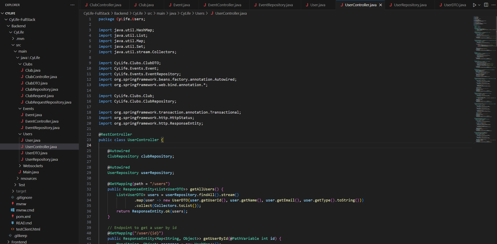
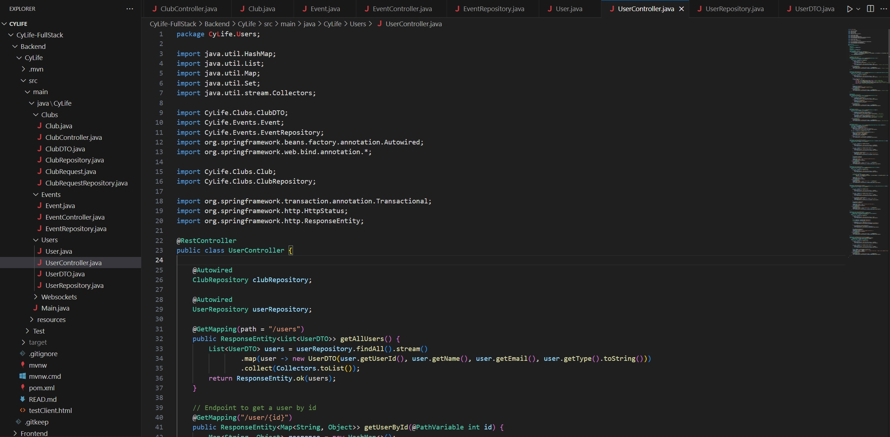

Work Experience
Undergraduate AI/ML Research Assistant
SwAPP Lab | Aug 2024 – Jan 2025
- Developed auto-labeled datasets using Tree-sitter, NumPy, and Python APIs to improve model interpretability and streamline the dataset labeling process.
- Optimized data processing pipelines with NumPy and SciPy, reducing processing time and enhancing clustering model accuracy for datasets of 100,000+ data points.
- Refined AI model outputs through prompt engineering and error analysis, improving clarity, precision, and consistency while leveraging Git for version control.
- Conducted in-depth model behavior analysis to detect bias and inconsistencies, applying statistical methods to enhance interpretability and reliability.

Software Engineer Intern
DePaul DICE Lab | May 2024 – Aug 2024
- Developed and deployed a Docker-based containerization system on an Ubuntu VM, integrating Content-Defined Merkle Trees (CDMT) with Python to enhance data deduplication and streamline storage management.
- Engineered a Python-driven data processing pipeline using NumPy to clean and transform container workflow logs, improving log analytics and anomaly detection.
- Automated container workflow management with Python scripts, optimizing deployment, resource allocation, and GitHub error logging to simplify operations and reduce manual intervention.
- Designed an efficient logging and monitoring framework for containerized environments, improving visibility into system performance and enhancing resource optimization in distributed computing systems.


 
